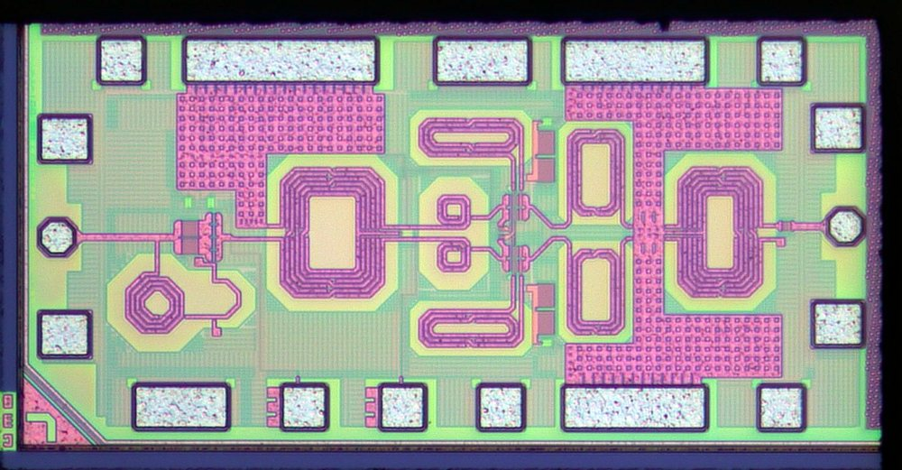
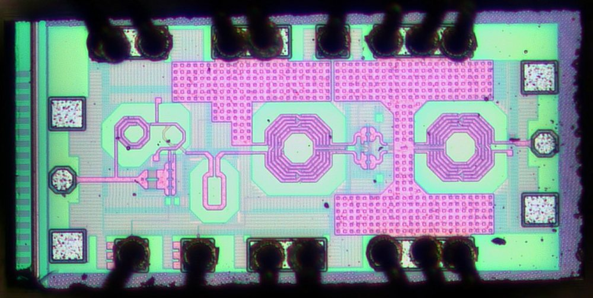
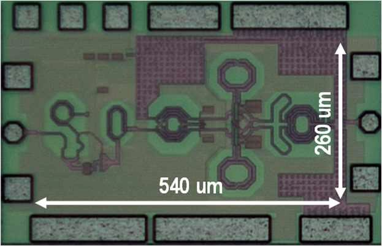
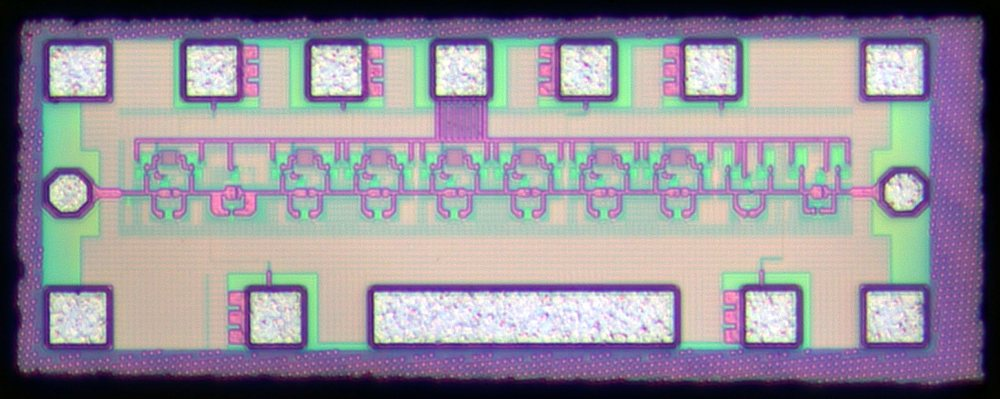

Broadband, high-linearity LNAs
Partially coupled transformers for wide input matching; large devices and Class-AB for high IP1dB.
- 8–12.2 GHz, 1.8 dB avg NF
- 10–19.2 GHz, up to −2.4 dBm IP1dB
- 21.5–35.5 GHz with built-in 180° shift
I design RF and mm-wave ICs: LNAs, PAs and phased-array beamformers, from 5 GHz to 150 GHz.
Integrated M.S.–Ph.D. student in Electronics Engineering, Chungnam National University. Semiconductor Circuit Design Laboratory, advised by Prof. Choul-Young Kim. Visiting Graduate Scholar with Prof. Gabriel M. Rebeiz at UC San Diego in 2024 and 2026.
TCAS-II paper on an X-band LNA accepted.
Visiting Graduate Scholar at UC San Diego.
Two papers at IEEE RFIC 2026, Boston.
Three papers at IEEE IMS 2025, two at APMC.
Four first-author results, each shown with its die photo. Click a card to open the paper.




Every circuit placed on the spectrum. Hover or tap a row for details; published rows open the paper.
Partially coupled transformers for wide input matching; large devices and Class-AB for high IP1dB.
Attenuators, phase shifters, switches and dividers that keep every channel in step.
Transformer power combining in CMOS and SiGe PAs for D-band transmitters.
One radio for sensing and data: phased-array transceivers from C band to 120 GHz.
Chips beyond the papers. The drawings are stylized layouts, not die photos; results will be added as they are published.
Education, research visits, funded projects and papers on one time axis.
For questions about a paper, collaboration or RFIC design work, email is the fastest way to reach me.